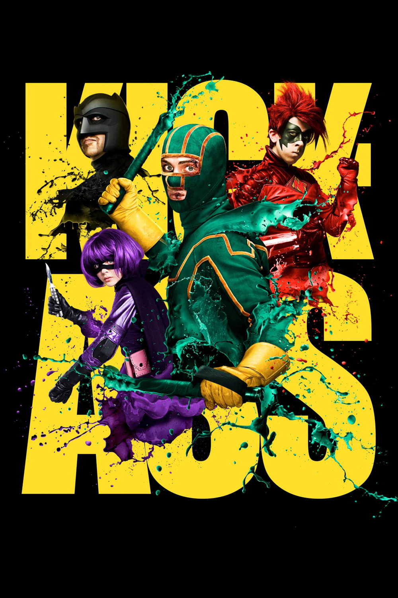

Мировая премьера: 16 апреля 2010
Слоган: Заткнись. Мочи.
Сюжет: Обычный подросток Дэйв Лизевски любил комиксы и мечтал стать настоящим супергероем: он придумал себе имя – Пипец, купил костюм с маской и отправился на борьбу с хулиганами. Вот только есть одна проблема: никаких сверхспособностей у него нет. Однако поступок Дэйва вдохновляет других последовать его примеру. Вскоре он знакомится с бесстрашными мстителями – одиннадцатилетней Убивашкой, виртуозно владеющей мечом, и её отцом Папаней, а также сближается с другим начинающим супергероем по прозвищу Красный Угар. Но коварный план местного мафиози Фрэнка Д'Амико подвергает новую команду серьёзному испытанию.
Режиссёр: Мэттью Вон
В основе: Комикс "Мордобой" (США, 2008-2010, автор – Марк Миллар)
Серия: Пипец
В ролях: Аарон Джонсон, Кристофер Минц-Плассе, Марк Стронг
| Аарон Джонсон | Дэйв Лизевски / Пипец |
| Кристофер Минц-Плассе | Крис Д'Амико / Кровавый Угар |
| Марк Стронг | Фрэнк Д'Амико |
| Николас Кейдж | Деймон Макриди / Папаня |
| Хлоя Грейс Морец | Минди Макриди / Убивашка |
| Майкл Рисполи | Джо |
| Линдси Фонсека | Кейти Дома |
| Кларк Дьюк | Марти Айзенберг |
| Эван Питерс | Тодд Хейнс |
| Стю Райли | Стю |
| Омари Хардвик | Сержант Маркус Уильямс |
| Ксандер Беркли | Детектив Виктор "Вик" Гиганте |
| Гэррет М. Браун | Мистер Лизевски |
| Кори Джонсон | Спортивный бандит |
| Декстер Флетчер | Коди |
| Джейсон Флеминг | Швейцар |
| Рэндалл Батинкофф | Тре Фернандес |
| Янси Батлер | Энджи Д'Амико |
| Адриан Мартинес | Рыжий бандит |
Бюджет: $ 30 млн.
Кассовые сборы в США: $ 48 млн.
Кассовые сборы в мире: $ 96 млн.
Продолжительность: 1 ч. 51 мин.
Рейтинг: 7.6